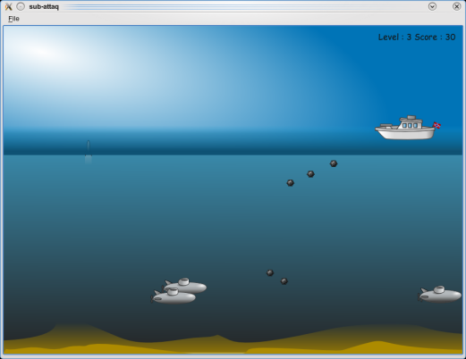

Sub-Attaq
This example shows Qt's ability to combine the animation framework and the state machine framework to create a game.

The purpose of the game is to destroy all submarines to win the current level. The boat can be controlled using left and right keys. To fire a bomb you can press up and down keys.
Files:
- animation/sub-attaq/animationmanager.cpp
- animation/sub-attaq/animationmanager.h
- animation/sub-attaq/boat.cpp
- animation/sub-attaq/boat.h
- animation/sub-attaq/boat_p.h
- animation/sub-attaq/bomb.cpp
- animation/sub-attaq/bomb.h
- animation/sub-attaq/data.xml
- animation/sub-attaq/graphicsscene.cpp
- animation/sub-attaq/graphicsscene.h
- animation/sub-attaq/mainwindow.cpp
- animation/sub-attaq/mainwindow.h
- animation/sub-attaq/pixmapitem.cpp
- animation/sub-attaq/pixmapitem.h
- animation/sub-attaq/progressitem.cpp
- animation/sub-attaq/progressitem.h
- animation/sub-attaq/qanimationstate.cpp
- animation/sub-attaq/qanimationstate.h
- animation/sub-attaq/states.cpp
- animation/sub-attaq/states.h
- animation/sub-attaq/submarine.cpp
- animation/sub-attaq/submarine.h
- animation/sub-attaq/submarine_p.h
- animation/sub-attaq/textinformationitem.cpp
- animation/sub-attaq/textinformationitem.h
- animation/sub-attaq/torpedo.cpp
- animation/sub-attaq/torpedo.h
- animation/sub-attaq/pics/scalable/background-n810.svg
- animation/sub-attaq/pics/scalable/background.svg
- animation/sub-attaq/pics/scalable/boat.svg
- animation/sub-attaq/pics/scalable/bomb.svg
- animation/sub-attaq/pics/scalable/sand.svg
- animation/sub-attaq/pics/scalable/see.svg
- animation/sub-attaq/pics/scalable/sky.svg
- animation/sub-attaq/pics/scalable/sub-attaq.svg
- animation/sub-attaq/pics/scalable/submarine.svg
- animation/sub-attaq/pics/scalable/surface.svg
- animation/sub-attaq/pics/scalable/torpedo.svg
- animation/sub-attaq/main.cpp
- animation/sub-attaq/sub-attaq.pro
- animation/sub-attaq/subattaq.qrc